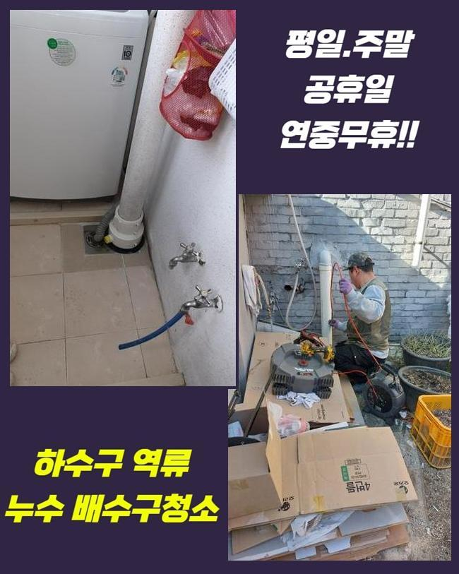
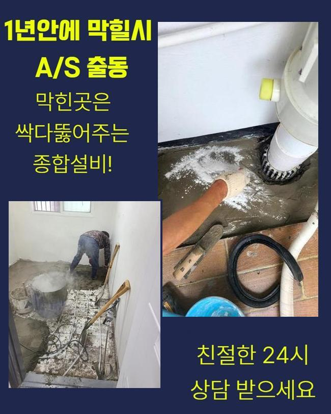
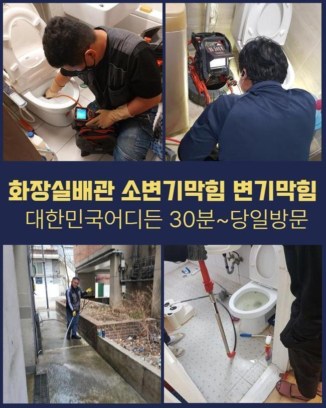
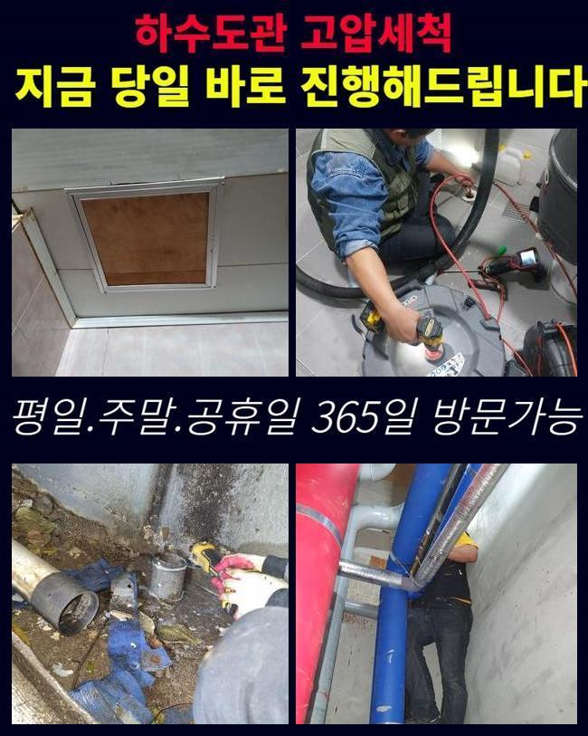
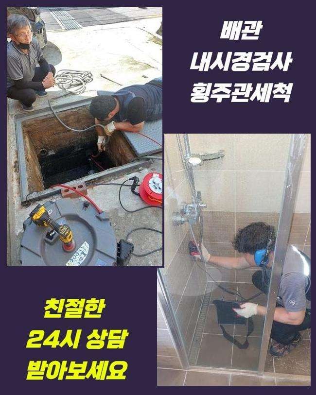
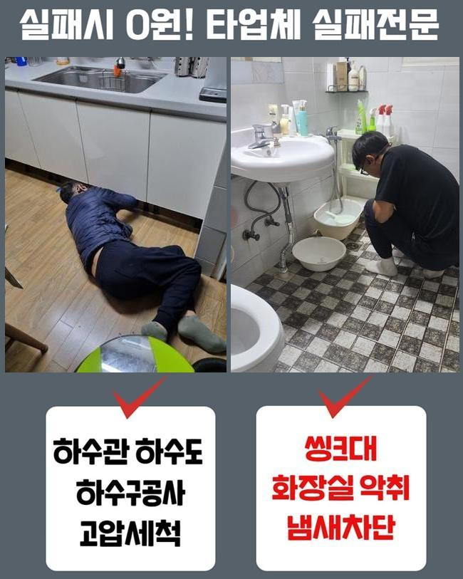
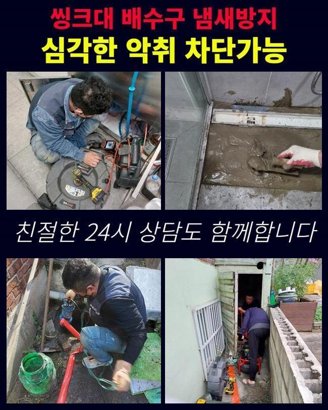

🏠 영등포 문래동하수도뚫음 여의동 맨홀역류 부속수리
용인 하수구막힘 전문 시공 후기

📋 작업 개요
- 위치: 용인
- 서비스 유형: 하수구막힘, 배관막힘, 맨홀막힘, 누수수리, 역류해결, 뚫는업체, 배관청소, 고압세척, 설비공사, 악취차단
- 작업 일시: 2025. 5. 21. 10:26
- 업체명: 하수구수사대 (010-5615-2118)
🔍 문제 상황
영등포 문래동하수도뚫음 여의동 맨홀역류 부속수리
금일은 아파트에서 우수관 정체로 역류증세가 나타난다는 문의를 받았죠
비가 내리면 우수파이프로 흘러나가야 함에도 외려 넘쳐났기에 근방이 오염되고 습기도 많아졌다 말씀하셨죠
과거에도 이번과 같은 증상이 나타났었는데 최근 일주일간 강우량이 많았기에 더욱 악화된거라고 토로하셨죠
그것으로 근방에 구린내도 많아졌고 입주자들의 항의도 지속해서 늘어갔다고 하셨어요
관리를 즉각 시행해달라고 요구하셨고 이에 저흰 지체없이 작업준비를 하기로 했어요
위치를 파악하니 멀지않은 곳에 존재하는 아파트였습니다
의뢰인분에게 바로 수리가능하다고 설명드리고 도구들을 챙긴뒤에 출발하게 되었어요
단지 안으로 들어가니 아파트 관리사무소 바로옆에 우수파이프가 보였어요
근처로 이동하니 나뭇잎들이 많았고 앞쪽으로 가보니 이를 치우기위한 청소장비들이 준비돼 있었네요
역류현상이 심해지며 관리자분들께서 교대로 치우는 상황이었어요
그랬음에도 역류는 개선이 안되어서 재빠른 뚫음을 바라셨던 거예요

🔎 원인 분석
💡 전문가 진단: 정밀 진단 장비를 사용하여 슬러지의 고착 여부를 판명하고 타격/세척 작업을 실시했습니다.
우수관로는 본래 낮은곳으로 빗물 등이 집약되도록 설계돼야 하겠으나 여긴 그런 부분이 제대로 반영되지 않은채 공사진행이 되어 역류증세가 심화되었던거죠
이것을 정리하려면 굴착 등을 해야했지만 고객께서는 그 부분은 차후 정리하시겠다고 말하셨고 일단은 우수관 통수를 해달라 요청설명해 주셨어요
우수배관의 막힘현상을 본격적으로 진단해보니 흙이나 낙엽들도 존재하였지만 물티슈와 같은 찌꺼기들도 많았죠
그것으로 관로가 차단되었고 역류증상이 나타날 지경까지 사태가 발전된거죠
고객분에게 혹여 세대내부에서 우수관쪽으로 오물을 보낼수 있는 상황인지 질문하였는데요
저층세대의 베란다에서 쓰는걸로 알고계셨어요
이와 관련하여 수차례 안내방송을 했지만 똑바로 되지않는 상태였죠
그러한 상황이 계속된다면 거듭해서 역류가 발발할수 있단걸 설명하였고 방예대책을 취하기로 하셨어요
배수시설물을 점검하니 빗물이 정상으로 빠져나가지 못하는게 곧바로 목도되었어요
우수설비 주변으로 찌꺼기들이 굉장히 많았기에 시공에 임하기 힘겨웠죠
그것에 더하여 파이프 속에 잔존하는 노폐물이 상당하고 부피도 컸기에 간단한 방책으로 처리하기엔 여의치 않았죠
이때문에 저희팀은 전동스프링을 활용해서 커다란 이물부터 처치하는 작업을 시작하게 되었죠
우수관로 주위가 비좁은 상태였고 습기도 가득하여 작업을 시행하기 곤란하긴 했어요

🔧 작업 과정
이러한 나쁜 컨디션에도 의뢰인분의 괴로움을 최소화시키기 위하여 지체없이 뚫음을 실행했답니다
내시경기기는 관로속을 관측하고 이물상태를 파악하는데 필수적인 기기입니다
이것을 활용해 우수관내부의 문제점을 명확하게 규명할수가 있으며 그것으로 작업시간을 절용할수가 있었답니다
그리고 스프링관통기를 이용하여 찌거기를 소멸시키는 업무가 단행되었습니다
우수관이 작다면 배수망이 설치되지 않아서 찌꺼기들이 손쉽게 흘러드는 형국이 왕왕 발발하죠
그렇게되면 침전물들이 적체되고 종국엔 관로정체가 빚어져서 역류가 생기거나 악취가 발생할 확률도 올라가겠죠
이것을 사전에 차단하려면 자주 내부청소를 시행해야 하며 나뭇잎 등이 침투못하게 거름장치를 설비하는 부분도 필요하답니다
그런 사안들을 의뢰자님께 설명드렸고 특별히 외부환경에 많이 노출된 관로일수록 더 신경써야한다고 강조하였습니다
청소를 시행할 때에도 우수관로 측면에 금이 가지는 않았는지 누수증세가 생길 가망은 없는지 꼼꼼하게 관찰하였어요
이러한 과정으로 추가적 문제를 예방하고 입주민들의 평안을 만족시킬수 있어요
어지간한 이물들을 없앤뒤에도 관로에는 아직 잔류물질이 상당량 남겨져 있었답니다
그것을 처리하려 플렉스샤프트 기기를 사용하기로 했죠
해당 장비는 강력하게 도는 쇠사슬로 배관면에 부착된 찌꺼기들을 갈아버리는 기계로 얇은 노즐이 있어 효율적으로 이물들을 제거해나갈 수 있는데요
그것에 더하여 배수관면을 자극하지 않아서 사고의 위험이 적다는 장점을 가지고 있어요
보슬비가 멈추었고 우수관주변의 이물들을 처리하려 흡입기기를 사용해 최종적으로 공정을 완료하였죠
분쇄기기로 갈아냈던 찌꺼기들을 여러차례 석션장비로 소제하면서 정체문제를 완벽하게 해결할수가 있었죠
거주자분들의 고초를 최소화시키기 위하여 끝까지 성심성의껏 일하였고 배수관은 이전과같이 빗물이 빠지는 상태로 뚫리게 되었답니다
이같은 시공으로 청결한 관로를 보존하는 업무가 불가결한 일이라는걸 거듭하여 이해하도록 해드렸답니다
배관이 막혀버리면 약소하게 물고임으로 끝나는게 아닌 더더욱 커다란 사태로 진행될수 있어 자주 세척하고 보존해나가야 한단걸 다시한번 말씀드려요
더군다나 여기는 물빠지는 위치의 높이자체가 높았기 때문에 한층 세심하게 청소해야 한다는 것또한 설명해 드렸어요


✅ 작업 완료
고객께서는 배관 내시경 이것을 활용해 전체 시공 업무를 즉시 확인하셨으며 공사를 마친뒤엔 다량의 물로 제대로 통수되었는지 확인하였어요
위와 같은 수순으로 아파트단지 안의 우수시설물의 막힘을 정리하였고 역류증상까지 확실하게 처리되었어요
관리해나가기 곤란한 공용배관이나 가지배관 고장도 숙련된 기술자를 찾아서 세세히 조사하고 정비받아보시길 당부합니다
독자분들의 배수시설에 이상이 일어나지 않기를 기원합니다
만약 문제가 포착되었다면 지체하지말고 문의해주세요 빠르게 방문드릴게요




⚠️ 베란다 누수 및 방수 관리 방법
- ✅ 비가 많이 올 때 창틀 주변이나 아래층 천장에 얼룩이 생기는지 정기적으로 확인해 보세요.
- ✅ 우수관 주변 실리콘 마감이 들뜨거나 깨진 틈새가 있는지 손상 여부를 수시로 체크하세요.
- ✅ 베란다 바닥 타일의 줄눈(메지)이 소실되면 그 틈으로 물이 침투하여 누수가 유발됩니다.
- ✅ 누수 의심 증상 발견 시 방치하면 아래층 손실이 커지므로 즉시 전문가의 진단을 받으십시오.
💡 핵심 정리
- 확실한 장비 작업(내시경 점검 및 샤프트 스케일링)으로 원인을 뿌리 뽑습니다.
- 작업 후 1년 이내에 동일한 부위 재발 시 100% 무상 A/S 서비스를 보장합니다.
- 서울 · 경기 · 인천 전 지역에 24시간 언제든 긴급 출동할 수 있도록 항시 대기 중입니다.
❓ 자주 묻는 질문 (FAQ)
🚨 용인 하수구막힘 문제로 고민이신가요?
정확한 원인 진단과 확실한 시공으로 재발 없는 해결을 약속드립니다.
24시간 긴급 출동 | 서울 · 경기 · 인천 전지역 | 1년 내 재발 시 무상 A/S